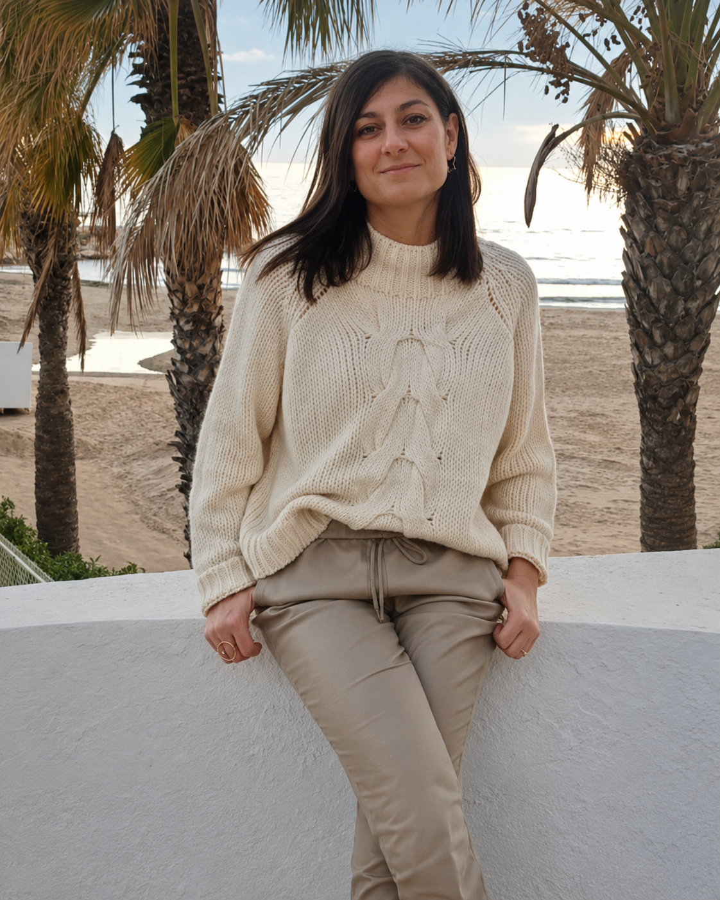

La botiga
Des de 2001 mantenint l'essència del comerç proper.
Catarinetes va obrir les seves portes per primera vegada a l'octubre del 2001, mantenint el nom de l'antiga merceria centenària que regentava el mateix local.
Durant tots aquests anys s'ha anat adaptant i renovant constantment, però mantenint l'essència i el tracte proper.
Com arribar-hi